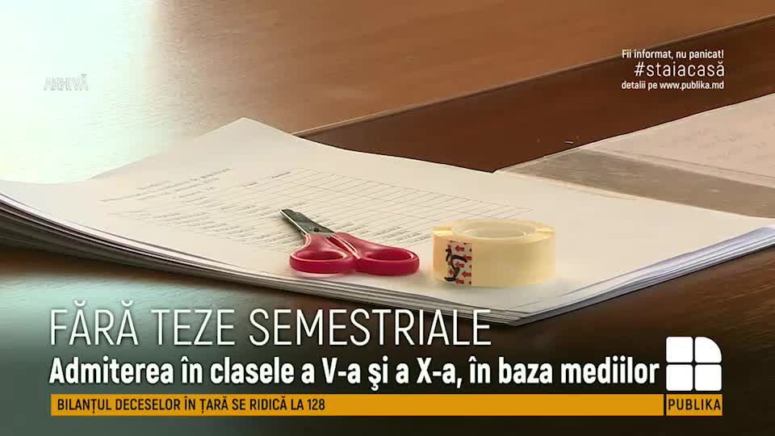
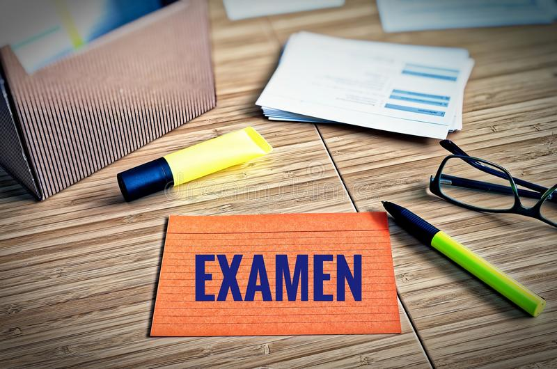

Noutăți
Înscrierea copiilor în clasa I-î
11/05/22
În conformitate cu ordinul MEC nr.231 din 30.03.2022 Cu privire la înscriera copiilor în clasa I
în anul de studii 2022 -2023 se aprobă orarul de înscriere a copiilor în clasa I. De la data de
01.04.2022 până la 01 iunie 2022 de desfășoară Prima etapă de înscriere în clasa I
A doua etapă de înscriere în clasa I va avea loc de la 14.06 - 29.08.2022. Mai multe detalii
accesați: Ordinul Ministerului Educației și Cercetării nr.231 din 30.03.2022
Testarea Națională
10/05/22 În conformitate cu ordinul MEC nr.231 din 30.03.2022 Cu privire la testarea națională în clasa a IV-a de studii 2021 -2022 se probă orarul de desfășurare a testării naționale pentru evaluarea cunoștințelor elevilor din clasa a IV-a.
Examenele la clasa a IX-a
08/05/22 
Orarul Examenelor Naționale de Absolvire a Gimnaziului pentru anul de studii 2021-2022:
Matematica - 6 iunie (luni)
Limba și literatura română - 9 iunie (joi)
Istoria românilor și universală - 13 iunie (luni)